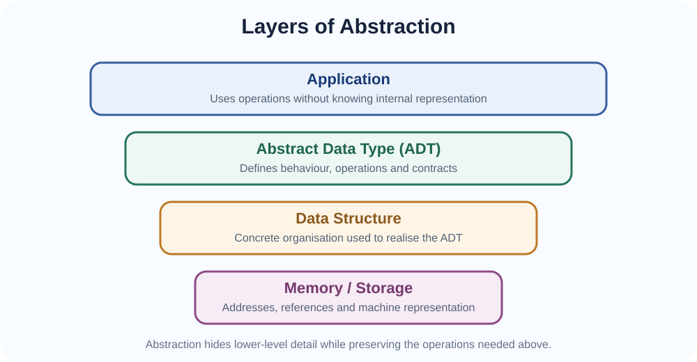
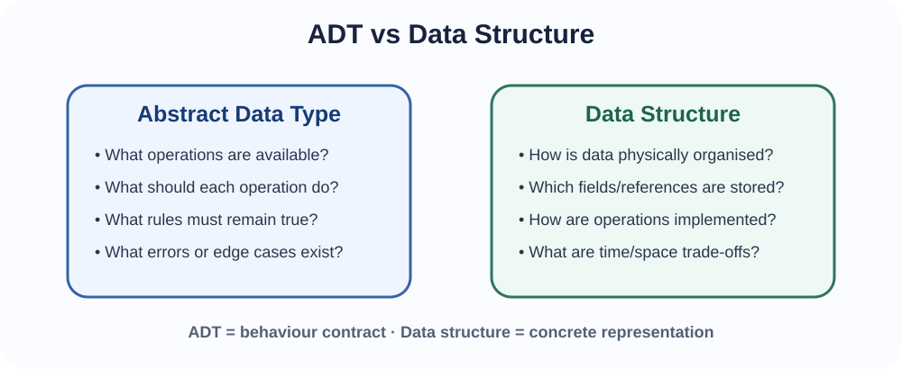
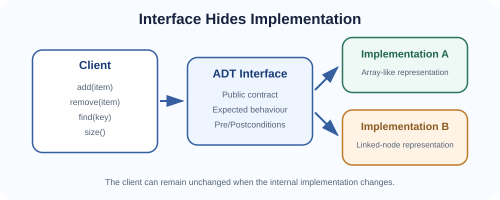
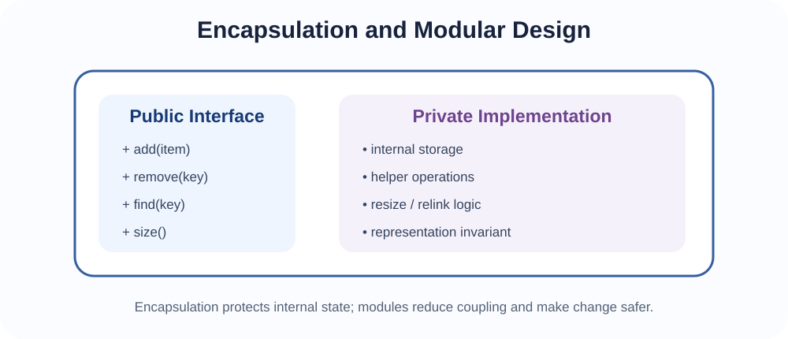

How computer scientists manage complexity by separating what a structure does from how it is built.
Modern software systems contain too much detail for one person to reason about all at once. When you use a mobile phone, you press an icon without thinking about transistor states. When you call a library function, you use its documented behaviour without reading every line of its implementation. This ability to ignore unnecessary detail is called abstraction.
In computer science, abstraction creates a level at which we can describe essential behaviour while hiding implementation details. It is not about pretending the details do not exist. It is about deciding which details matter at a particular moment.

A driver uses a steering wheel, pedals and dashboard controls. The driver does not need to know the exact combustion, electrical or transmission mechanism in order to operate the car. The controls form an interface; the engine and transmission provide an implementation. Similar controls can hide very different internal designs.
As programmes grew larger in the 1960s and 1970s, software engineering increasingly needed ways to control complexity and reduce the effects of change. Ideas such as information hiding, modularity and abstract data types became important because they allowed programmers to specify what a component should do without exposing all of its internal representation.
The modern formulation of abstract data types developed strongly in the 1970s, including influential work by researchers such as Barbara Liskov and Stephen Zilles. The key principle remains highly relevant: clients should depend on a component's behaviour and interface rather than on unnecessary internal details.
Abstraction becomes easier to understand when a few basic terms are separated clearly.
| Term | Meaning | Simple example |
|---|---|---|
| Data | Recorded values, facts or symbols that can be stored and processed. | A student's mark of 78. |
| Data object | A particular entity or instance that contains or represents data. | One student record containing registration number, name and marks. |
| Data type | A classification that determines what kind of values are allowed and which operations are meaningful for them. | An integer supports arithmetic; a Boolean represents true/false. |
| Data structure | A way of organising collections of data so that required operations can be performed effectively. | An array, linked list, tree or graph. |
| Abstract Data Type (ADT) | A logical specification of values, operations and behavioural rules without requiring one particular representation. | A Stack defined by push, pop and peek behaviour. |
The distinction is important: a data type describes the nature of values, a data structure organises collections of values, and an ADT specifies behaviour independently of the concrete representation.
Programming languages normally provide some data types directly. More complex structures can then be formed by combining simpler values and operations.
| Built-in data types | Derived / constructed types |
|---|---|
| Provided directly by the language. | Built from or organised using simpler types and associated operations. |
| Examples: integer, Boolean, floating-point value, character, string. | Examples: arrays, lists, stacks and queues in the broad introductory sense. |
| Real-world analogy: individual ingredients. | Real-world analogy: a recipe or organised container made from several ingredients. |
Data structures can be classified in several ways. Two useful questions are:
These classifications describe different properties. A structure can be linear and static, linear and dynamic, or non-linear and dynamically allocated, depending on its design and implementation.
| Linear structures | Non-linear structures |
|---|---|
| Elements are organised in a sequence or logical line. | Elements may branch, form hierarchies or have many-to-many relationships. |
| Typical traversal follows one main progression. | Traversal may require choosing among several branches or connections. |
| Examples: arrays, linked lists, stacks and queues. | Examples: trees and graphs. |
| Real-world example: people waiting in a service queue. | Real-world example: a family tree or road network. |
A university registration queue is naturally linear because students are processed in an order. A university organisational chart is hierarchical, so a tree-like representation is more natural. A road network allows many possible connections between places, so a graph is more suitable.
This classification concerns whether the amount of storage is fixed in advance or can change as the programme runs.
| Static structure | Dynamic structure |
|---|---|
| Capacity is fixed or reserved in advance for the relevant period of execution. | Storage can grow or shrink as elements are added or removed. |
| Often simpler and predictable. | Often more flexible when the number of elements is not known beforehand. |
| A fixed-size array is the standard introductory example. | A linked list is the standard introductory example. |
| Real-world example: a classroom with exactly 40 numbered seats. | Real-world example: a waiting list where new names can be added as needed. |
Topic 3 will make this difference concrete by comparing fixed arrays, dynamic arrays and linked lists.
An Abstract Data Type is a logical description of a collection of values together with the operations that may be performed on those values and the rules governing those operations. An ADT describes what operations mean. It does not require one particular physical representation.
For example, a simple Student Registry ADT might offer:
add(student) — insert a student record if allowed;remove(registrationNumber) — remove the corresponding record;find(registrationNumber) — return the matching student or indicate absence;size() — return the number of stored records;isEmpty() — report whether the registry contains no records.That specification does not yet tell us whether the records are stored in an array, linked nodes, a tree, a hash table or another structure. Those are implementation decisions.

| Question | ADT | Data structure |
|---|---|---|
| Main concern | What behaviour and operations are provided? | How are values organised in memory? |
| Level | Abstract / logical | Concrete / representational |
| Examples | List, Set, Map, Stack, Queue, Priority Queue | Array, linked nodes, binary search tree, heap, hash table |
| Can one ADT have several implementations? | Yes. The same ADT can often be implemented using different data structures. | |
Some names are used informally for both an abstract behaviour and a common implementation. A stack, for example, is most usefully understood first as an ADT defined by LIFO behaviour. It can then be implemented using an array, linked structure or another suitable representation.

The interface is the public set of operations that clients are allowed to use. The implementation is the internal representation and procedures that make those operations work.
An ADT becomes useful when its operations have clear behavioural contracts. A contract may describe preconditions, postconditions, return values, invalid cases and effects on state.
Operation: add(student)
Precondition:
student's registration number is valid
Postcondition:
if the registration number was not already present,
the registry contains the student and size increases by 1
Policy:
duplicate registration numbers are rejectedA representation invariant is a condition that must remain true for the internal state to represent a valid instance of the ADT. For a student registry, possible invariants include:
If an operation breaks the representation invariant, later operations may fail even if the error is not immediately visible.
Encapsulation means bundling state and the operations that manage that state while controlling direct access to the internal representation. In object-oriented programming this is often supported by classes and access controls such as private fields, but encapsulation is a broader design principle.

If clients can change internal data directly, they can accidentally violate invariants. If the internal size counter of a registry were publicly writable, a client could set the size to 200 even when only 15 records exist. Controlled operations allow the ADT to defend its own rules.
Information hiding means hiding design decisions that clients do not need and that may change independently. Modular design divides a system into components with clear responsibilities and controlled interaction.
A good module has high cohesion: its parts work toward one focused purpose. It also aims for low coupling: other modules depend on as little internal detail as possible.
Instead of one large programme, we might have separate modules for student-record management, assessment validation, grade computation and report generation. If the grading policy changes, a well-designed system allows that module to change without rewriting unrelated modules.
ADT DatasetCollection
Operations:
add(record)
remove(recordID)
get(recordID)
contains(recordID)
size()
isEmpty()
Rules:
recordID values are unique
size() equals the number of stored records
remove() does not corrupt remaining recordsAt this stage, we intentionally avoid committing to an array, linked list, tree or hash table. The choice can be made later based on expected operations and performance requirements.
Once the ADT is clear, we can ask which concrete representation best supports its important operations. If random access by position is frequent, one representation may be preferable. If insertions and removals dominate, another may be better. If fast key lookup is essential, a hash-based representation may be attractive.
This is why learning data structures is not about memorising names. It is about understanding the trade-offs that allow an ADT to be implemented appropriately for a problem.
| Application | Abstraction / structure idea |
|---|---|
| ATM machine | The customer sees withdraw, deposit and balance operations; database transactions, authentication and account storage remain hidden. |
| Mobile contacts | The user thinks in terms of add, search, edit and delete contacts rather than memory addresses or index-management details. |
| University registration | A queue-like ADT can model students awaiting service, while the implementation might use an array or linked nodes. |
| Organisational hierarchy | A tree is a non-linear representation because one unit can branch into several sub-units. |
| Road network | A graph is non-linear because one place may connect to many others. |
| Machine-learning library | Users call fit() and predict() through an interface while matrices, optimisation routines and internal state remain hidden. |
| Operating system files | Open, read, write and close operations hide lower-level storage-device details. |
Abstraction provides clarity, modularity, maintainability and safer change. It can also introduce extra layers and design overhead. Good software engineering therefore aims for useful abstraction, not abstraction for its own sake.
In Topic 3 we will examine two concrete data structures — arrays and linked lists — and see how the same logical operations behave differently depending on representation.